Desde 2013 abastecendo Primavera do Leste
Seu gás acabou? A Primagaz Primavera resolve com atendimento rápido e confiança de verdade.
Gás, água mineral, reguladores, registros e vasilhames com entrega ágil para toda Primavera do Leste - MT. Somos uma empresa física, com duas unidades estratégicas, operação residencial e industrial e compromisso com peso certo e preço justo.
- Atendimento das 07:00 às 22:00
- Gás para casa, comércio e uso industrial
- Entrega para toda a cidade
Qualidade garantida
Entrega expressa
Preço justo
Atendimento local
Carregando status de atendimento...
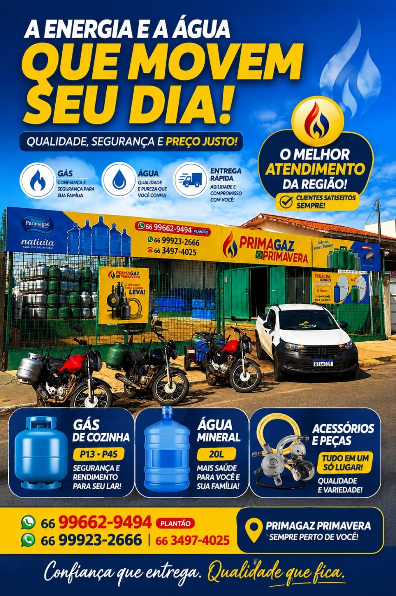
Primagaz Primavera
Gás, água mineral, acessórios e atendimento rápido para mover o seu dia.
Pedido rápido
Toque no produto que você precisa e vá direto para o atendimento.
Primagaz em movimento
Veja de perto a agilidade de quem atende Primavera do Leste todos os dias
O vídeo mostra a presença local da Primagaz Primavera e reforça a estrutura preparada para entregar gás, água mineral e acessórios com rapidez.
Pedir pelo WhatsAppAtendimento local com entrega rápida
Linha completa
Produtos que mantêm sua casa e seu negócio abastecidos
Estrutura completa para pedidos rápidos, reposição segura e acessórios essenciais para o uso diário do gás e da água mineral.
Gás de cozinha
Atendimento ágil para reposição residencial com apoio rápido no WhatsApp.
Pedir este itemGás 20 kg
Opção prática para demandas específicas com logística eficiente em toda a cidade.
Solicitar orçamentoGás 45 kg
Ideal para operações que precisam de maior volume e continuidade de abastecimento.
Falar com a equipeÁgua mineral
Distribuição forte na cidade para reposição rápida em residências e empresas.
Quero pedir águaRegulador e registro de gás
Acessórios essenciais para instalação e reposição com mais praticidade para o cliente.
Ver disponibilidadeVasilhames de gás e água
Categorias variadas para atender reposição, troca e novas necessidades de uso.
Pedir informações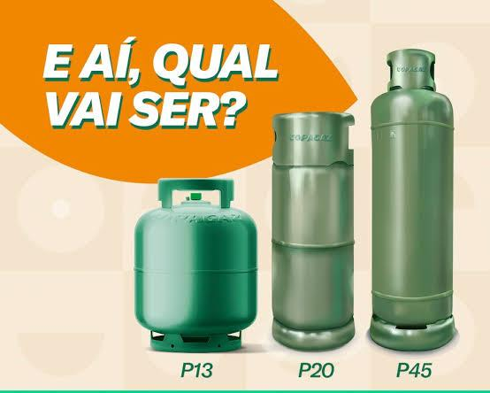
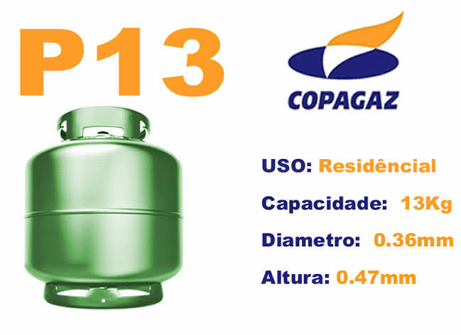
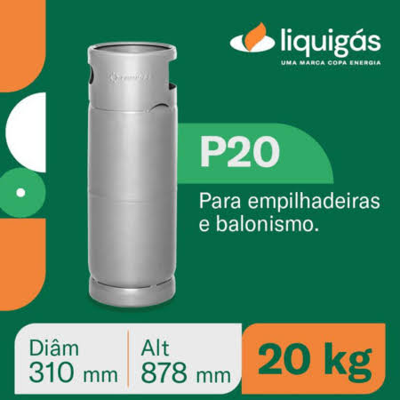
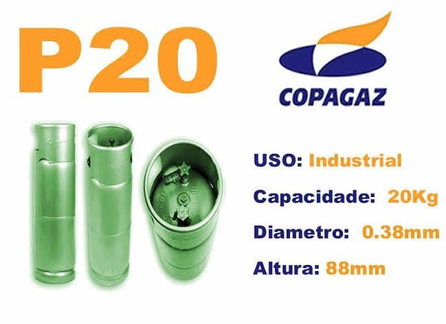
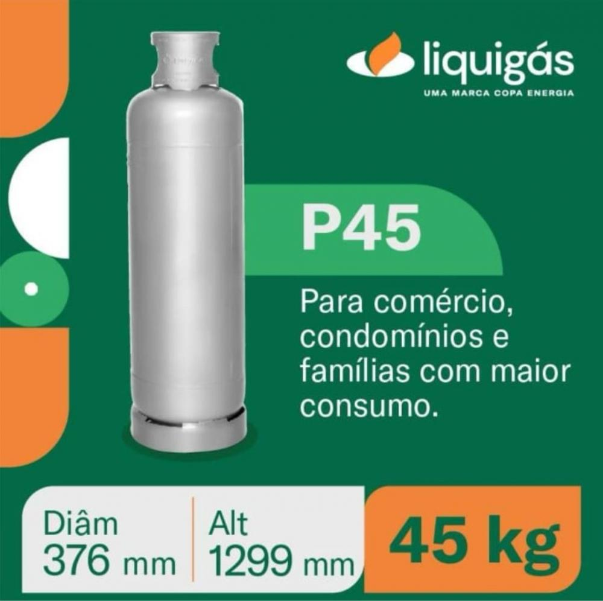
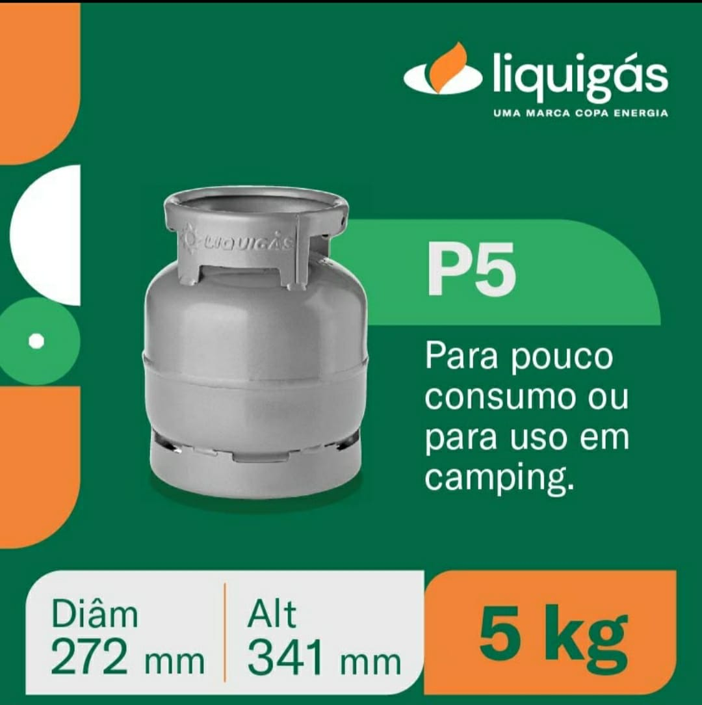
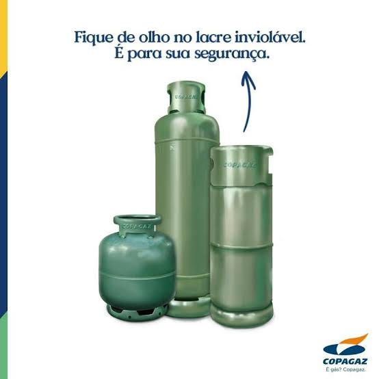
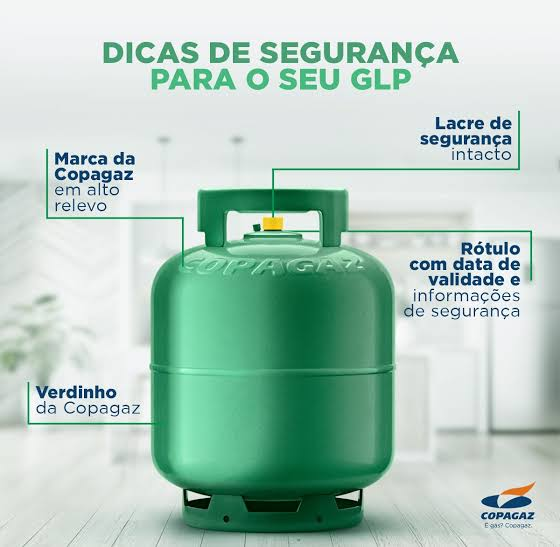
Água puríssima para empresas
Abastecimento de água mineral para equipes, com entrega rápida e confiável
A Primagaz Primavera também atende empresas, comércios, indústrias e escritórios que precisam manter a rotina bem abastecida com água de qualidade.
Empresas e escritórios
Entrega em Primavera do Leste
Água pura e segura
Pedir água para empresa
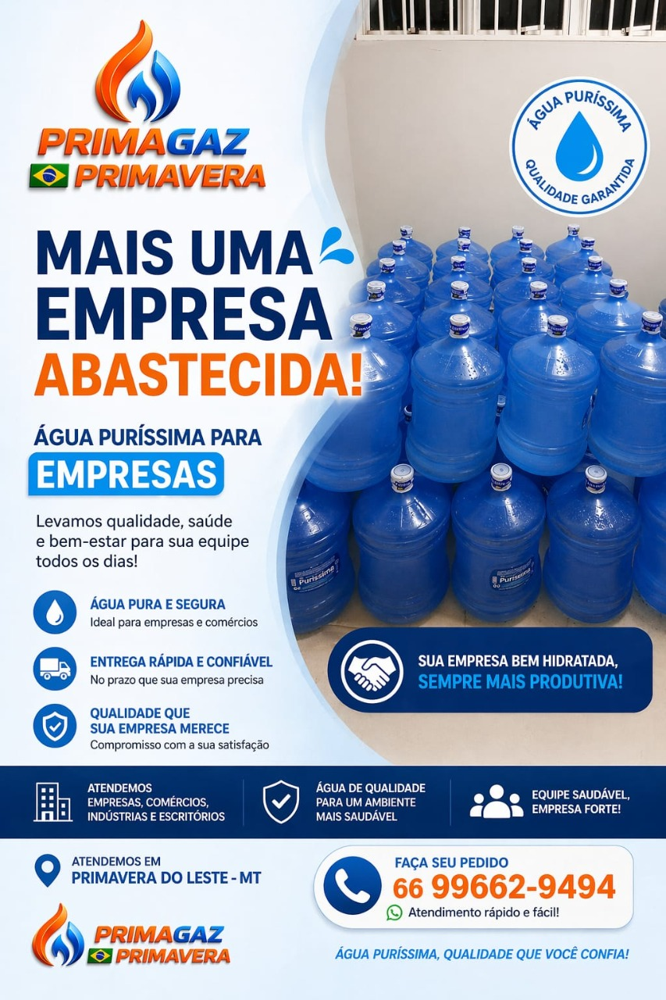
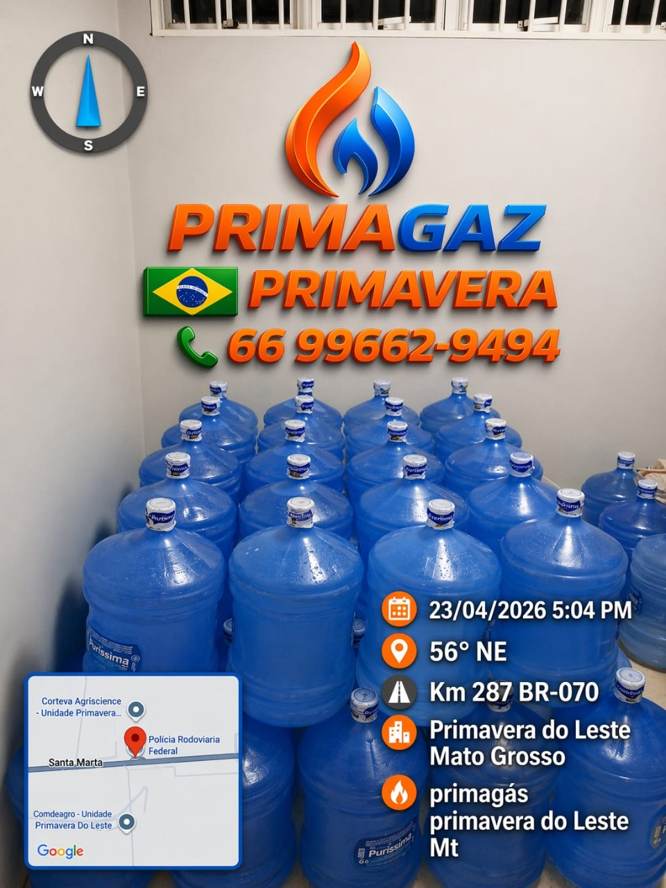
Como funciona
Comprar na Primagaz Primavera é simples, rápido e direto
A estrutura foi pensada para reduzir atrito no pedido e transformar interesse em venda com mais facilidade.
Escolha o que precisa
Gás, água, regulador, registro ou vasilhame. A equipe orienta se você tiver dúvida.
Chame no WhatsApp ou ligue
Você fala direto com a equipe e informa seu pedido de forma prática e rápida.
Receba com agilidade
Duas lojas em pontos estratégicos ajudam no atendimento de toda Primavera do Leste.
Motivos para comprar
Mais do que vender gás: a Primagaz Primavera quer ser a primeira escolha da cidade.
A empresa nasceu em 2013 e cresceu atendendo diretamente a rotina de famílias e empresas de Primavera do Leste. Hoje é reconhecida pela agilidade no abastecimento, proximidade com o cliente e presença forte no mercado local.
Peso certo e preço justo
Uma promessa central da marca para gerar confiança e recorrência no atendimento.
Duas lojas, mais velocidade
Pontos estratégicos melhoram a logística e ajudam a atender a cidade com mais agilidade.
Marca presente no dia a dia
Brindes no ato da compra e sorteios em datas comemorativas fortalecem a relação com o cliente.
Atendimento para diferentes cenários
Casa, restaurante, hotel, empilhadeira e outras demandas que precisam de abastecimento confiável.
Pedido sem enrolação
Fale direto com quem resolve
Nada de formulários longos ou caminhos difíceis. Na Primagaz Primavera, seu pedido começa com um clique.
Monte seu pedido
Envie uma mensagem pronta para a equipe em segundos
Preencha só o essencial e o site monta sua solicitação para o WhatsApp da Primagaz Primavera. É uma forma mais rápida de transformar visita em conversa e conversa em venda.
- Pedido rápido para casa ou empresa
- Ideal para gás, água e acessórios
- Atendimento local em Primavera do Leste
Dicas úteis
Orientações simples para usar seu botijão com mais segurança
Conteúdo útil ajuda a gerar confiança e também aproxima a marca de quem está pesquisando por gás na cidade.
Armazenagem correta
Mantenha o botijão em local ventilado e longe de fontes de calor ou ambientes totalmente fechados.
Instalação sem improviso
Use regulador adequado, faça a conexão com cuidado e nunca tente adaptações fora do padrão.
Verificação rápida
Se suspeitar de vazamento, utilize espuma de sabão nas conexões. Se formar bolhas, peça orientação.
Nossa história
Uma empresa nascida para abastecer Primavera do Leste com agilidade
A Primagaz Primavera surgiu em 2013, em Primavera do Leste, Mato Grosso, atendendo diretamente o abastecimento de gás de cozinha e gás industrial para empilhadeiras, restaurantes e hotéis.
Ao longo dos anos, ampliou seu mix com água mineral, reguladores, registros e revenda de vasilhames, consolidando duas lojas em pontos estratégicos para acelerar as entregas e atender melhor o cliente da cidade.
O diferencial está na proximidade com o público, na distribuição cuidadosa e no compromisso diário com peso certo, preço justo e atendimento que gera recompra.
Nossas unidades
Duas localizações para atender Primavera do Leste com mais agilidade
A Primagaz atende pela matriz e pela filial, facilitando o pedido de gás, água mineral e acessórios em diferentes regiões da cidade.
Primagaz Primavera
Avenida Ângelo Ravanello, 573Bairro Cristo Rei / Centro
Primavera do Leste - MT
Primagaz Buritis
Avenida Eldevir Victorino Viecili, 182Esquina com Rua Catolé
Bairro Buritis e região
Tem dúvidas?
A gente responde o que seu cliente quer saber antes de pedir
Uma boa FAQ reduz objeções, melhora a confiança e ajuda o visitante a dar o próximo passo.
Quais produtos posso pedir na Primagaz Primavera?
Você pode pedir gás, água mineral, reguladores, registros de gás e vasilhames de diferentes categorias.
A Primagaz Primavera atende só residências?
Não. A empresa atende residências e também demandas comerciais e industriais, como restaurantes, hotéis e empilhadeiras.
Como faço meu pedido com mais rapidez?
O caminho mais rápido é clicar no WhatsApp, escolher o produto ou usar o formulário desta página para enviar uma mensagem pronta.
Qual região vocês atendem?
A Primagaz atende Primavera do Leste - MT com matriz na Avenida Ângelo Ravanello, 573, no Cristo Rei/Centro, e filial na Avenida Eldevir Victorino Viecili, 182, no Buritis.
Qual o horário de funcionamento?
O atendimento funciona diariamente das 07:00 às 22:00.
Peça agora